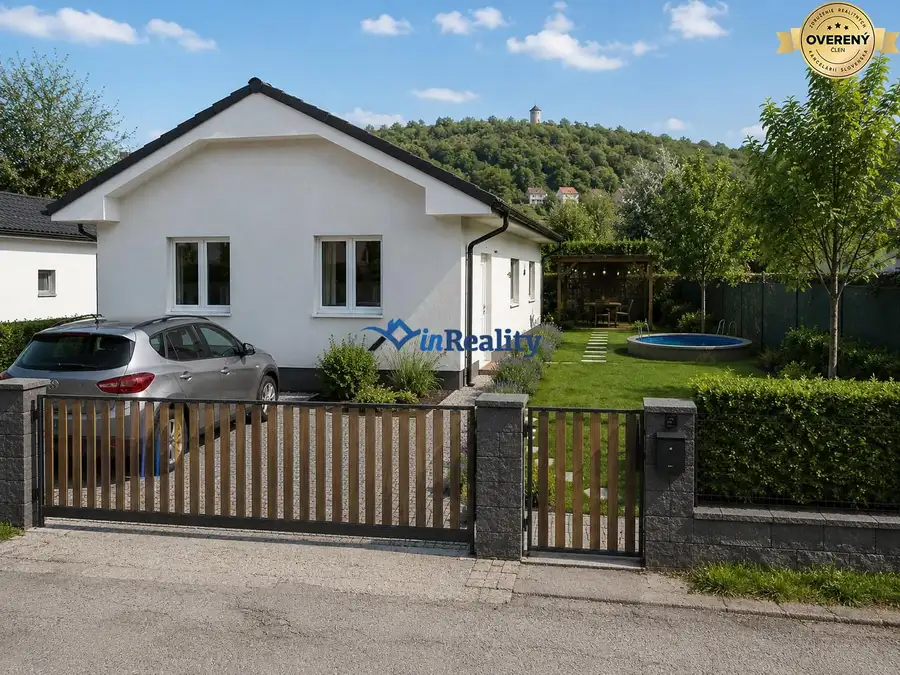
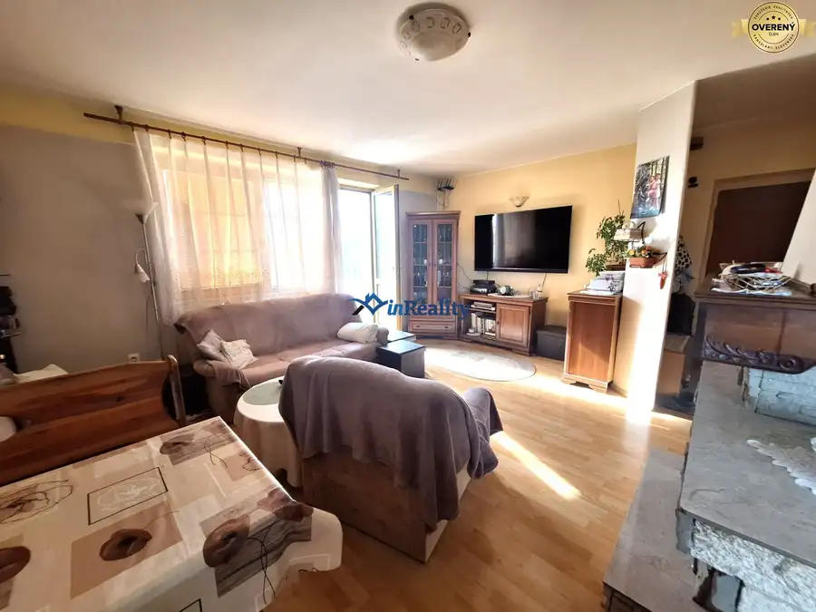
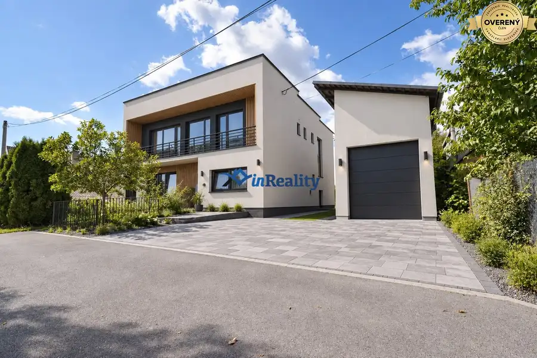

Ponúkame na predaj usadlosť vhodnú aj na trvalé bývanie.
Očová
- Plocha130 m²
- Poschodie0.
- Stavpôvodný
- Vlastníctvoosobné
O nehnuteľnosti
Ponúkame na predaj staršiu usadlosť - rodinný dom umiestnenú v malebnom prostredí medzi Očovou a Sebedínom pri tajchu Aladár.
Nehnuteľnosť je postavená na pozemku s rozlohou 1060 a prislúcha k nej aj veľká ovocná záhrada s rozlohou 820 m2.
Dispozične pozostáva z troch miestností a kuchyne. Jedna izba prechodná z kuchyne slúžila ako spálňa, v jednej je vybudovaná provizórna kúpeľňa a ďalšia je ako sklad.
Ide o starší jednopodlažný rodinný dom so sedlovou strechou, kde murivom je prevažne kameň.
Nehnuteľnosť je napojená na elektrinu, lokálne vybudovaný vodovod, kúrenie realizované prostredníctvom pecí na tuhé palivo, odpad je zvedený do septiku u suseda.
K stavbe prislúcha dreváreň a prístrešky pre chov domácich zvierat.
Kompletný právny servis zabezpečený.
Tento rodinný dom nie je len obytným priestorom, ale aj miestom, kde si môžete vytvoriť mnoho krásnych spomienok.
Kontaktujte nás pre viac informácií a zabezpečte si prehliadku tohto domu ešte dnes!
Parametre
| Zastavaná plocha | 150 m² |
|---|---|
| Úžitková plocha | 130 m² |
| Poschodie | prízemie |
| Vlastníctvo | osobné |
| Stav | pôvodný |
| Voda | studňa |
| El. napätie | 230/400V |
| Plyn | nie |
| Kanalizácia | nie |
| Postavené z | Zmiešané |
| Energetický certifikát | nie |
| Terén | rovina |
| Dátum zverejnenia | 9. 6. 2026 |
Kde to je
Mohlo by Vás zaujímať

Pozemok7 39 200 €Ponúkame na predaj pozemok vhodný na výstavbu RD Krupina 490 m² Ponúkame na predaj pozemok vhodný na výstavbu RD Ponúkame na predaj rovinatý pozemok s rozlohou 490 m2 v blízkosti centra mesta, vhodný na výstavbu…
Byt10 155 000 €Predaj priestranného bytu na Ostrej Lúke Zvolen 4-izbový96 m² ...
Rodinné domy10 Cena dohodouPredáme rodinný dom s potenciálom, vo vychytenej lokalite Badín. Banská Bystrica 280 m² Ponúkame ideálne bývanie pre dve generácie v atraktívnej lokalite v blízkosti Banskej Bystrice, v blízkosti centra obce Badín. Samostatne stojaci…